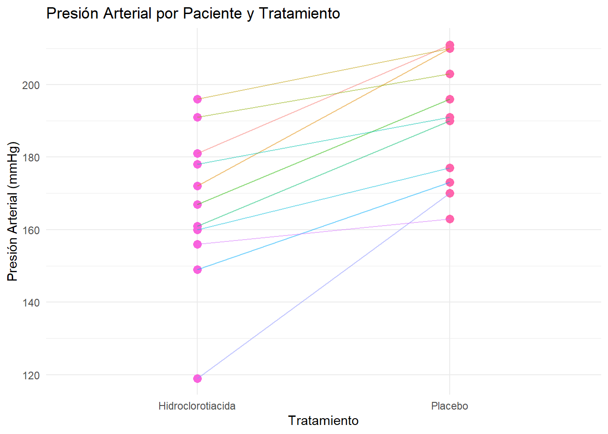

Capítulo 23 Aplicaciones de los contrastes de hipótesis
Elección del tipo de test
Estos ejercicios representan situaciones típicas en los que se puede utilizar un contraste de hipótesis para decidir entre dos hipótesis relativas a un problema.
En una situación real debemos (solemos) empezar con una visualización de los datos y, eventualmente, cuando procede (en variables cuantitativas) un test de normalidad que nos sirve para decidir que tipo de contraste utilizar.
Estos ejercicios se han adaptado del excelente libro de Baron y otros (Bioestadística) de la Universidad de Málaga, pero por su naturaleza más académica, no vienen acompañados de conjuntos de datos mínimamente grandes, como para poder hacer dichas visualizaciones y pruebas de normalidad.
En consecuencia, la “decisión” sobre si utilizar un test paramétrico o no paramétrico puede ser más difícil de tomar.
A título de pista podemos decir que los ejercicios 1 al 9 están tomados del capítulo de pruebas paramétricas, del 10 al 13 del capítulo de pruebas de la ji cuadrado y del 14 al 18 del capítulo de pruebas no paramétricas de dicho documento.
Sin embargo, y con el fin de motivar un trabajo reflexivo, os animo a justificar en cada caso porque decidís aplicar el tests que aplicáis. Y, de hecho, cuando sea posible, os animo también a aplicar tanto la versión paramétrica como la no paramétrica de un test y valorar, aparte de cual es el adecuado, si os llevan o no ala misma conclusión.
Procedimiento del test
Enfoque de Neymann-Pearson
Recordad que la aplicación de un contraste no consiste en escribir un código de R, mirar un p-valor y decidir si rechazamos o no la hipótesis.
Aunque no es bueno adherirse a un esquema rígido si que resulta útil tener una mínima pauta que podemos considerar común a la mayoría de los problemas en los que aplicamos el contraste de hipótesis.
Esta pauta puede describirse de la forma siguiente:
I: ANTES DE OBTENER LOS DATOS deberíamos:
Definir el modelo probabilístico sobre el que realizaremos el contraste
Definir el tamaño del efecto a detectar en la población (en estos ejercicios suele ser cero)
Reformular la pregunta de investigación en términos de las hipótesis nula y alternativa (\(H_0\) y \(H_1\))
Elegir el nivel de significación \(\alpha\) (e, idealmente la potencia \(1-\beta\)) con los que controlaremos el error de tipo I y de tipo II (\(\beta\)) respectivamente. Habitualmente tan sólo podemos prefijar \(\alpha\)
Escoger el estadístico de test adecuado al problema, el modelo y las hipótesis. Idealmente desearemos que sea un test óptimo
Calcular el tamaño de la muestra necesario para alcanzar la potencia deseada.
Obtener el valor crítico \(t_{\alpha}\) asociado al estadístico de test seleccionado. Esto equivale a definir la región crítica del test.
II: Proceder a recoger los datos
III: UNA VEZ SE HAN OBTENIDO LOS DATOS
Calcular el valor del estadístico de test en la muestra, \(t^{obs}\)
Decidir si, a la vista de la comparación entre \(t_{\alpha}\) y \(t^{obs}\) nos inclinamos por la hipótesis nula o la alternativa.
Interpretar la decisión en términos de la hipótesis científica que ha generado el problema. Diferenciar cuando sea posible si hay significación estadística, clínica/biológica o ambas
En la práctica, y en los ejercicios que siguen, podemos encontrarnos con los datos recogidos y desear llevar a cabo el contraste.
En este caso, omitiremos el cálculo del tamaño muestral y la potencia.
Esta lista no es una plantilla para resolver cualquier problema de contraste de hipótesis, pero sí que debe ayudarnos a ver que un test no es tan solo un cálculo y una decisión basada en un p-valor sino un proceso de toma de decisión que, para que tenga sentido debe de realizarse teniendo en cuenta los elementos que se han descrito.
¿Y que hay del p-valor? (Fisher)
Obsérvese que el procedimiento descrito no ha hecho referencia al p-valor, concepto particularmente discutido en la estadística actual.
El p-valor, de hecho, no forma parte del esquema presentado, basado en la teoría de contraste de hipótesis de Neymann-Pearson sino de la teoría de las pruebas de significación estadística introducida por R.A. Fisher.
Dichas pruebas de significación iban principalmente encaminadas a decidir si se rechazaba o no una hipótesis (no había hipótesis alternativa) e, informalmente los pasos a realizar eran:
Seleccionar un estadístico de test que mida adecuadamente la discrepancia entre la hipótesis y las observaciones.
Construir la hipótesis nula
Calcular la probabilidad teórica del resultado observado \(t^{obs}\), bajo la hipótesis nula, es decir el p-valor.
Decidir sobre la significación de los resultados, si la probabilidad de los mismos bajo \(H_0\) era “pequeña” (Fisher no imponía puntos de corte). Es decir rechazar la hipótesis nula si el p-valor es pequeño.
Interpretar los resultados.
Combinando ambas aproximaciones
Fisher y Neymann-Pearson debatieron duramente, hace casi un siglo, sobre cual de las dos aproximaciones era la adecuada.
Sin entrar en la polémica entre ambas, el hecho es que con el tiempo, muchos autores tendieron a fundir (y a confundir!) ambas aproximaciones, lo que llevó a combinar las hipótesis nula y alternativa de Neymann-pearson con el p-valor de Fisher.
En la actualidad, en la que la mayoría de los cálculos se llevan a cabo con ordenador, es inmediato, tras calcular el valor del estadístico de test, obtener el p-valor de la prueba por lo que la decisión sobre si se acepta la hipótesis nula o la alternativa se realiza a menudo comparando el p-valor con la probabilidad de error de tipo I (\(\alpha\)) en vez de comparar el valor observado del estadístico de test (\(t^{obs}\)) con el valor crítico (\(t_\alpha\)). En la práctica, esta sustitución puede considerarse adecuada si no va más allá de cambiar un criterio de decisión por otro.
23.1 Ejercicio 1
El calcio se presenta normalmente en la sangre de los mamíferos en concentraciones de alrededor de 6 mg por cada 100 ml del total de sangre. La desviación típica normal de ésta variable es 1 mg de calcio por cada 100 ml del volumen total de sangre. Una variabilidad mayor a ésta puede ocasionar graves trastornos en la coagulación de la sangre. Una serie de nueve pruebas sobre un paciente revelaron una media muestral de \(6,2 \mathrm{mg}\) de calcio por 100 ml del volumen total de sangre, y una desviación típica muestral de 2 mg de calcio por cada 100 ml de sangre. ¿Hay alguna evidencia, para un nivel \(\alpha=0,05\), de que el nivel medio de calcio para este paciente sea más alto del normal?
23.2 Ejercicio 2
Las guías médicas recomiendan realizar una campaña de educación e higiene dental si el porcentaje de niños con dientes cariados es superior al \(15 \%\). En una población con 12.637 niños, ¿debe hacerse la campaña si, de 387 de ellos, 70 tenían algún diente cariado?
23.2.1 SOLUCIÓN
Fijémonos que el objetivo del problema es decidir si a partir de la muestra se puede afirmar que más del 15% de la población tiene dientes cariados.
Dado que “más de 15%” no se corresponde con ningún valor concreto, replanteamos el problema como un contraste de hipótesis, con una hipótesis nula, que en realidad no nos interesa, y una alternativa que es el objeto de nuestro estudio.
- Hipótesis nula: la proporción de niños con dientes cariados es igual a 0.15 (\(H_0: p = 0.15\)),
- Hipótesis alternativa: esta proporción es mayor de 0.15 (\(H_1: p > 0.15\)).
Se trata, por tanto, de un contraste unilateral a la derecha.
Podemos estimar la proporción a partir de la muestra y utilizar el test para decidir hasta que punto los datos son compatibles con la hipótesis nula.
Para ello utilizamos la proporción muestral que se calcula como el cociente entre el número de niños con dientes cariados en la muestra y el tamaño total de la muestra.
\[ \hat{p} = \frac{x}{n} \]
Para este contraste, dado el tamaño muestral considerable, podemos utilizar una aproximación normal a la distribución de la proporción muestral, con lo que el estadístico de test será:
\[ z = \frac{\hat{p} - p_0}{\sqrt{\frac{p_0 (1 - p_0)}{n}}} \]
donde \(p_0 = 0.15\) es la proporción bajo la hipótesis nula.
Fijamos un nivel de significación de \(\alpha = 0.05\) y determinamos el valor \(z_\alpha\) que nos permitirá decidir si el valor de \(z\) nos lleva a rechazar \(H_0\) o no.
Dado que la hipótesis alternativa es unilateral por la derecha (\(p> p_0\)) el criterio de decsión será: rechazar \(H_0\) si \(z > Z_\alpha\).
Alternativamente podemos utilizar el p-valor para fundamentar nuestra decisión. El p-valor, que es la probabilidad de que el estadístico de test supere el valor en la muestra bajo \(H_0,\) se calcula buscando la probabilidad de obtener valores superiores a z0 con una \(N(0,1)\) que es la distribución del estadístico de test bajo \(H_0\):
Si nos basamos en el p-valor, el criterio de decisiónserá **rechazar \(H_0\) si \(\alpha > pval\)
Podemos ahora realizar los cálculos:
El valor crítico es:
alpha<- 0.05
zalpha <- qnorm(1-alpha)
zalpha## [1] 1.644854La proporción muestral, \(\hat{p}\)
# Datos del problema
x <- 70
n <- 387
p0 <- 0.15
# Proporción muestral
phat <- x / n
phat## [1] 0.1808786El valor del estadístico de test, calculado sobre la muestra será:
# Estadístico z0
z0 <- (phat - p0) / sqrt(p0 * (1 - p0) / n)
z0## [1] 1.701208El p-valor se calcula como:
pval <- pnorm(z0, lower.tail=FALSE)
pval## [1] 0.044452Finalmente, para tomar la decisión comparamos
z0con \(z_\alpha\): Si \(z0 > z_\alpha\) rechazamos \(H_0\)pvalcon \(\alpha\): Si \(pval < \alpha\) rechazamos \(H_0\)
cat("zalpha vale: ", zalpha)## zalpha vale: 1.644854
cat("z0 vale : ", z0)## z0 vale : 1.701208Es decir \(Z0 > Z_\alpha\) lo que nos lleva a rechazar la hipótesis nula y
cat("alpha vale : ", alpha)## alpha vale : 0.05
cat("pval vale : ", pval)## pval vale : 0.044452El pvalor es \(pval < \alpha\) lo que también lleva a rechazar \(H_0\).
Ambos criterios nos llevan a rechazar la hipótesis nula, es decir a concluir que la proporción de niños con dientes cariados en la población es significativamente mayor que el 15%, con una probabilidad de error de tipo I igual a 0.05.
En los términos del enunciado, esta decisión nos llevará a que recomendemos llevar a cabo la campaña de educación e higiene dental, ya que los datos sugieren que el porcentaje de niños con dientes cariados supera el límite del 15%. Si no rechazamos \(H_0\), no sería justificable iniciar la campaña basándonos en estos datos.
23.3 Ejercicio 3
Muchos autores afirman que los pacientes con depresión tienen una función cortical por debajo de lo normal debido a un riego sanguíneo cerebral por debajo de lo normal. A dos muestras de individuos, unos con depresión y otros normales, se les midió un índice que indica el flujo sanguíneo en la materia gris (dado en \(\mathrm{mg} /(100 \mathrm{~g} / \mathrm{min})\)) obteniéndose:
\[ \begin{array}{l|ccc} \text { Depresivos } & n_{1}=19 & \bar{x}_{1}=47 & \hat{\mathcal{S}}_{1}=7^{\prime} 8 \\ \hline \text { Normales } & n_{2}=22 & \bar{x}_{2}=53^{\prime} 8 & \hat{\mathcal{S}}_{2}=6^{\prime} 1 \end{array} \]
¿Hay evidencia significativa a favor de la afirmación de los autores?
23.4 Ejercicio 4
La prueba de la d-xilosa permite la diferenciación entre una esteatorrea originada por una mala absorción intestinal y la debida a una insuficiencia pancreática, de modo que cifras inferiores a 4 grs. de d-xilosa, indican una mala absorción intestinal. Se realiza dicha prueba a 10 individuos, obteniéndose una media de 3,5 grs. y una desviación típica de 0,5 grs. ¿Se puede decir que esos pacientes padecen una mala absorción intestinal?
23.4.1 SOLUCIÓN
El objetivo del problema es determinar si los pacientes de la muestra padecen una mala absorción intestinal, lo que ocurre si el promedio de d-xilosa es inferior a 4 gramos. Esto se puede plantear como un contraste de hipótesis donde:
- La hipótesis nula establece que la media es igual a 4 (\(H_0: \mu = 4\)).
- La hipótesis alternativa plantea que la media es menor de 4 (\(H_1: \mu < 4\)).
Como la hipotesis alternativa es que la media poblacional es inferior a un valor, el contraste se plantea como un contraste unilateral por la izquierda.
Una vez más, observemos que, aunque nos interesa determinar si la media es inferior a 4, la hipótesis nula no es esta inferioridad, sino una igualdad a 4. Esto es así porque necesitamos un valor concreto para poder hacer los cálculos “bajo la hipótesis nula”, por ejemplo para calcular el valor del estadístico de test, o el p-valor.
Dado que no disponemos de los datos, tan sólo podemos realizar un test asumiendo normalidad de los mismos. Aunque esto es una suposición que deberíamos comprobar, tampoco es muy disparatado, por no decir que al basarnos en la media, que por el Teorema Central del Límite, tiende a la normalidad, es bastante razonable utilizar un test basado en el estadístico t de Student. Esta “flexibilidad” del test se describe afirmando que “el test t de student es robusto frente a la falta de normalidad”.
El estadístico de test es:
\[ t = \frac{\bar{x} - \mu_0}{s / \sqrt{n}} \]
donde: - \(\bar{x} = 3.5\) es la media muestral, - \(\mu_0 = 4\) es la media bajo la hipótesis nula, - \(s = 0.5\) es la desviación estándar muestral (asumimos que la desviación estandar corregida, resultante de dividir por \(n-1\)). - \(n = 10\) es el tamaño de la muestra.
Fijaremos el nivel de significación \(\alpha = 0.05\) y determinaremos el valor crítico \(t_\alpha\), que será el cuantil correspondiente en una \(t\) con \(n - 1 = 9\) grados de libertad. Alternativamente, calcularemos el p-valor para decidir si rechazamos \(H_0\), en caso que éste sea inferior al nivel de significación del test.
Procedemos a realizar los cálculos:
# Datos
xbar <- 3.5
mu0 <- 4
s <- 0.5
n <- 10
alpha <- 0.05
# Estadístico de test
t_stat <- (xbar - mu0) / (s / sqrt(n))
# Valor crítico t_alpha
t_alpha <- qt(alpha, df = n - 1)
# P-valor
p_value <- pt(t_stat, df = n - 1)
list(t_stat = t_stat, t_alpha = t_alpha, p_value = p_value)## $t_stat
## [1] -3.162278
##
## $t_alpha
## [1] -1.833113
##
## $p_value
## [1] 0.005753993A la vista de los resultados dado que el valor del estadístico de test es \(t_{stat}< t_\alpha\) podemos rechazar \(H_0\).
Llegamos a la misma conclusión si comparamos el p-valor con \(\alpha\): \(pval < \alpha\).
Podemos concluir que los datos proporcionan suficiente evidencia para afirmar que la media de d-xilosa en los pacientes es menor de 4 gramos lo que implica, con una probabilidad de error de tipo I del 0.05, que los pacientes sufren de mala absorción intestinal.
Desde el punto de vista práctico esto indicaría que los pacientes analizados podrían beneficiarse de un diagnóstico de mala absorción intestinal para guiar el tratamiento adecuado.
23.5 Ejercicio 5
La tabla siguiente muestra los efectos de un placebo y de la hidroclorotiacida sobre la presión sanguínea sistólica de 11 pacientes.
| Placebo | 211 | 210 | 210 | 203 | 196 | 190 | 191 | 177 | 173 | 170 | 163 |
|---|---|---|---|---|---|---|---|---|---|---|---|
| H-cloro | 181 | 172 | 196 | 191 | 167 | 161 | 178 | 160 | 149 | 119 | 156 |
Según estos datos experimentales, ¿podemos afirmar que el tratamiento con hidroclorotiacida disminuye la tensión arterial al menos en 10 unidades?
23.5.1 SOLUCIÓN
Queremos determinar si el tratamiento con hidroclorotiacida hace bajar la tensión arterial, y si este descenso es, como mínimo de 10 unidades (menos que esto puede considerarse variación aleatoria segun el estándar clínico utilizado).
Este problema se puede abordar con un contraste de hipótesis que compare los valores medias de dos muestras apareadas (dependientes), ya que las mediciones provienen de los mismos pacientes bajo dos condiciones diferentes.
No disponemos de infomación sobre la normalidad de los datos y con 11 observaciones no tienen mucho sentido hacer un test de normalidad.
Así pues podemos optar, segun que hipótesis asumamos, por dos contrastes distintos:
Si asumimos normalidad o basándonos en la robustez del test t podemos realizar unn test t- de Student
Si no realizamos la suposición anterior podemos realizar un test no paramétrico como el test de los rangos con signo de Wilcoxon.
Estrictamente hablando, ambos contrastes comparan la tendecia central pero el test t se basa en la media de las diferencias mientras que el test de rangos se basa en la mediana de las diferencias.
Si para simplificar llamamos \(m_d\) a ambas:
- Hipótesis nula (\(H_0\)): \(m_d = 10\).
- Hipótesis alternativa (\(H_1\)): \(m_d < 10\).
Obsérvese que, en este caso el valor de la hipótesis nula es 10, aunque el complementario de la alternativa seria \(m_d \leq 10\).
-
Aproximación paramétrica: Usaremos el test t de Student para muestras emparejadas. El estadístico de prueba es:
\[ t = \frac{\bar{d}}{s_d / \sqrt{n}} \]
donde:
- \(\bar{d}\) es la media de las diferencias,
- \(s_d\) es la desviación estándar de las diferencias,
- \(n\) es el número de pares.
Aproximación no paramétrica: Usaremos el test de rangos con signo de Wilcoxon, que evalúa si la mediana de las diferencias es distinta de cero.
El estadístico de prueba del test de Wilcoxon para datos emparejados se define como:
\[ W = \min\left(W^+, W^-\right) \]
donde: - \[ W^+ = \sum_{i \in \{d_i > 0\}} R_i \] es la suma de los rangos correspondientes a las diferencias positivas, - \[ W^- = \sum_{i \in \{d_i < 0\}} R_i \] es la suma de los rangos correspondientes a las diferencias negativas, - \[ R_i \] es el rango absoluto asignado a la diferencia \[ |d_i| \], ordenada en valor absoluto.
El valor observado de \[ W \] se compara con su distribución teórica bajo la hipótesis nula para calcular el p-valor. Dicha distribución puede ser exacta o aproximada, pero aquí no profundizaremos en ello.
Procedemos a realizar los cálculos con R:
# Datos
placebo <- c(211, 210, 210, 203, 196, 190, 191, 177, 173, 170, 163)
h_cloro <- c(181, 172, 196, 191, 167, 161, 178, 160, 149, 119, 156)
# Diferencias
meandiff <- mean(h_cloro - placebo)
# Paramétrico: Test t de Student
t_test <- t.test(h_cloro, placebo, mu = -10, alternative = "less", paired = TRUE)
# No paramétrico: Test de Wilcoxon
wilcoxon_test <- wilcox.test(h_cloro, placebo, mu = -10, alternative = "less", paired = TRUE)## Warning in wilcox.test.default(h_cloro, placebo, mu = -10, alternative =
## "less", : cannot compute exact p-value with ties
list(
mean_difference = meandiff,
t_test_statistic = t_test$statistic,
t_test_p_value = t_test$p.value,
wilcoxon_statistic = wilcoxon_test$statistic,
wilcoxon_p_value = wilcoxon_test$p.value
)## $mean_difference
## [1] -24
##
## $t_test_statistic
## t
## -3.546655
##
## $t_test_p_value
## [1] 0.00264884
##
## $wilcoxon_statistic
## V
## 2.5
##
## $wilcoxon_p_value
## [1] 0.003792958En ambos casos, el p-valor del test es muy) inferior al nivel de significación pre-fijado \(\alpha=0.05\) por lo que concluiremos que hay evidencia suficiente para afirmar que existe una diferencia significativa entre el tratamiento y el placebo.
Ambos tests nos llevan a concluir que la presión arterial sistólica media ha descendido en más de 10 unidades entre los pacientes que han recibido el tratamiento frente a los que tan sólo recibieron el placebo. `
NOTA: Obsérves como se realiza el test de datos pareados. R no indica explícitamente el orden en que realiza la diferencia por lo que, en caso de duda lo mejor es verificar si el signo del estadístico de test concuerda con el de la diferencia de medias que se ha añadido como verificación.
En este caso la diferencia ha sido entre el primer vector y el segundo por lo que, si \(H_0\) es cierta y la diferencia es, como mínimo de 10 unidades el valor de la diferencia media será de -10, porque hemos substraido la cntidad grande (“placebo”) de la pequeña (“hidroclorotiazida”).
Un diagrama de lineas para datos apareados sirve para reforzar la conclusión:
# Datos
placebo <- c(211, 210, 210, 203, 196, 190, 191, 177, 173, 170, 163)
h_cloro <- c(181, 172, 196, 191, 167, 161, 178, 160, 149, 119, 156)
# Crear un data frame para los valores emparejados
data <- data.frame(
Paciente = 1:length(placebo),
Placebo = placebo,
Hidroclorotiacida = h_cloro
)
# Transformar a formato largo para ggplot
library(tidyr)
data_long <- pivot_longer(data, cols = c("Placebo", "Hidroclorotiacida"),
names_to = "Tratamiento", values_to = "Presión")
# Generar el gráfico
library(ggplot2)
ggplot(data_long, aes(x = Tratamiento, y = Presión, group = Paciente)) +
geom_point(aes(color = Tratamiento), size = 3) +
geom_line(aes(color = factor(Paciente)), alpha = 0.5) +
labs(title = "Presión Arterial por Paciente y Tratamiento",
x = "Tratamiento",
y = "Presión Arterial (mmHg)") +
theme_minimal() +
theme(legend.position = "none")
Como vemos, y comoparece razonable en un tratamiento para la tensión, los pacientes tratados con hidroclorotiacida presentan un descenso de la tensión.
23.6 Ejercicio 6
De un estudio sobre la incidencia de la hipertensión en la provincia de Málaga, se sabe que en la zona rural el porcentaje de hipertensos es del \(27,7 \%\). Tras una encuesta a 400 personas de una zona urbana, se obtuvo un \(24 \%\) de hipertensos.
- ¿Se puede decir que el porcentaje de hipertensos en la zona urbana es distinto que en la zona rural?
- ¿Es menor el porcentaje de hipertensos en la zona urbana que en la zona rural?
23.7 Ejercicio 7
Se desea comparar la actividad motora espontánea de un grupo de 25 ratas control y otro de 36 ratas desnutridas. Se midió el número de veces que pasaban delante de una célula fotoeléctrica durante 24 horas. Los datos obtenidos fueron los siguientes:
\[ \begin{array}{l|ccc} \text { Ratas de control } & n_{1}=25 & \bar{x}_{1}=869,8 & \mathcal{S}_{1}=106,7 \\ \hline \text { Ratas desnutridas } & n_{2}=36 & \bar{x}_{2}=465 & \mathcal{S}_{2}=153,7 \end{array} \]
¿Se observan diferencias significativas entre el grupo control y el grupo desnutrido?
23.8 Ejercicio 8
Se pretende comprobar la hipótesis expuesta en algunos trabajos de investigación acerca de que la presencia del antígeno AG-4 está relacionada con un desenlace fatal. Con éste fin, se hizo una revisión sobre las historias clínicas de 21 mujeres muertas por carcinoma de cuello uterino, observando que 6 de ellas presentaban el citado antígeno. Por otro lado y con fines de comparación se tomó otra muestra de 42 personas, con edades similares a las del grupo anterior y que reaccionaron bien al tratamiento del carcinoma de cuello uterino, en 28 de las cuales se observó la presencia del citado antígeno. ¿Puede pues afirmarse que la presencia del antígeno se relaciona con una efectividad del tratamiento?
23.9 Ejercicio 9
Para comprobar si la tolerancia a la glucosa en sujetos sanos tiende a decrecer con la edad se realizó un test oral de glucosa a dos muestras de pacientes sanos, unos jóvenes y otros adultos. El test consistió en medir el nivel de glucosa en sangre en el momento de la ingestión (nivel basal) de 100 grs. de glucosa y a los 60 minutos de la toma. Los resultados fueron los siguientes:
| Jóvenes: | Basal | 81 | 89 | 80 | 75 | 74 | 97 | 76 | 89 | 83 |
|---|---|---|---|---|---|---|---|---|---|---|
| 60 minutos | 136 | 150 | 149 | 141 | 138 | 154 | 141 | 155 | 145 | 147 |
| Adultos: | Basal | 98 | 94 | 93 | 88 | 79 | 90 | 86 | 89 | 81 |
|---|---|---|---|---|---|---|---|---|---|---|
| 60 minutos | 196 | 190 | 191 | 189 | 159 | 185 | 182 | 190 | 170 | 197 |
- ¿Se detecta una variación significativa del nivel de glucosa en sangre en cada grupo?
- ¿Es mayor la concentración de glucosa en sangre a los 60 minutos, en adultos que en jóvenes?
- El contenido basal de glucosa en sangre, ¿es menor en jóvenes que en adultos?
- ¿Se detecta a los 60 minutos una variación del nivel de glucosa en sangre diferente de los adultos, en los jóvenes?
23.10 Ejercicio 10
Ante la sospecha de que el hábito de fumar de una embarazada puede influir en el peso de su hijo al nacer, se tomaron dos muestras, una de fumadoras y otra de no fumadoras, y se clasificó a sus hijos en tres categorías en función de su peso en relación con los percentiles \(\mathcal{P}_{10}\) y \(\mathcal{P}_{90}\) de la población. El resultado se expresa en la tabla siguiente:
| Peso del niño | |||
|---|---|---|---|
| ¿Madre fumadora? | Menor de \(\mathcal{P}_{10}\) | Entre \(\mathcal{P}_{10}\) y \(\mathcal{P}_{90}\) | Mayor de \(\mathcal{P}_{90}\) |
| 117 | 529 | 19 | |
| 124 | 1147 | 117 | |
¿Hay una evidencia significativa a favor de la sospecha a la vista de los resultados de la muestra?
23.11 Ejercicio 11
Varios libros de Medicina Interna recomiendan al médico la palpación de la arteria radial con el fin de evaluar el estado de la pared arterial. Se tomaron 215 pacientes y se les clasificó según la palpabilidad de dicha arteria (grados 0,1 y 2 para no palpable, palpable y muy palpable o dura, respectivamente) y según una puntuación de 0 a 4 en orden creciente de degeneración arterial (evaluada tras la muerte del paciente y su análisis anatomo-patológico). Los datos son los de la tabla siguiente:
| Palpabilidad | ||||
|---|---|---|---|---|
| Degeneración | \(\mathbf{0}\) | \(\mathbf{1}\) | \(\mathbf{2}\) | |
| \(\mathbf{0}\) | 20 | 5 | 5 | |
| \(\mathbf{1}\) | 60 | 20 | 10 | |
| \(\mathbf{2}\) | 45 | 15 | 15 | |
| \(\mathbf{3}\) | 10 | 5 | 5 | |
¿Existe relación entre el grado de palpabilidad y el análisis anatomopatológico?
23.12 Ejercicio 12
Con el fin de conocer si un cierto tipo de bacterias se distribuyen al azar en un determinado cultivo o si, por el contrario, lo hacen con algún tipo de preferencia (el centro, los extremos, etc…), se divide un cultivo en 576 áreas iguales y se cuenta el número de bacterias en cada área. Los resultados son los siguientes:
| \(n^{o}\) de bacterias | 0 | 1 | 2 | 3 | 4 | \(\geq 5\) |
|---|---|---|---|---|---|---|
| \(n^{o}\) de áreas | 229 | 211 | 93 | 35 | 7 |
¿Obedecen los datos a una distribución de Poisson?
23.13 Ejercicio 13
Deseamos conocer, si las distribuciones atendiendo al grupo sanguíneo, en tres muestras referidas atendiendo al tipo de tensión arterial, se distribuyen de igual manera. Para lo cual, se reunió una muestra de 1500 sujetos a los que se les determinó su grupo sanguíneo y se les tomó la tensión arterial, clasificándose ésta en baja, normal, y alta. Obteniéndose los siguientes resultados:
| Grupo sanguíneo | ||||||
|---|---|---|---|---|---|---|
| Tensión arterial | A | B | AB | O | Total | |
| Baja | 28 | 9 | 7 | 31 | 75 | |
| Normal | 543 | 211 | 90 | 476 | 1.320 | |
| Alta | 44 | 22 | 8 | 31 | 105 | |
| Total | 615 | 242 | 105 | 538 | 1.500 | |
23.14 Ejercicio 14
Se realiza un estudio para determinar los efectos de poner fin a un bloqueo renal en pacientes cuya función renal está deteriorada a causa de una metástasis maligna avanzada de causa no urológica. Se mide la tensión arterial de cada paciente antes y después de la operación. Se obtienen los siguientes resultados:
Tensión arterial
| Antes | 150 | 132 | 130 | 116 | 107 | 100 | 101 | 96 | 90 | 78 |
|---|---|---|---|---|---|---|---|---|---|---|
| Después | 90 | 102 | 80 | 82 | 90 | 94 | 84 | 93 | 89 | \(8 ? ? ? ? ?\) |
¿Se puede concluir que la intervención quirúrgica tiende a disminuir la tensión arterial?
23.15 Ejercicio 15
Se ensayaron dos tratamientos antirreumáticos administrados al azar, sobre dos grupos de 10 pacientes, con referencia a una escala convencional (a mayor puntuación, mayor eficacia), valorada después del tratamiento. Los resultados fueron:
Nivel de eficacia del tratamiento
| Tratamiento primero | 12 | 15 | 21 | 17 | 38 | 42 | 10 | 23 | 35 | 28 |
|---|---|---|---|---|---|---|---|---|---|---|
| Tratamiento segundo | 21 | 18 | 25 | 14 | 52 | 65 | 40 | 43 | 35 | 42 |
Decidir si existe diferencia entre los tratamientos.
23.16 Ejercicio 16
Los siguientes datos nos dan el peso de comida (en Kg.) consumidos por adulto y día en diferentes momentos en un año. Usar un contraste no paramétrico para comprobar si el consumo de comida es el mismo en los 4 meses considerados.
| Febrero | Mayo | Agosto | Noviembre |
|---|---|---|---|
| \(4^{\prime} 7\) | \(4^{\prime} 7\) | \(4^{\prime} 8\) | \(4^{\prime} 9\) |
| \(4^{\prime} 9\) | \(4^{\prime} 4\) | \(4^{\prime} 7\) | \(5^{\prime} 2\) |
| \(5^{\prime} 0\) | \(4^{\prime} 3\) | \(4^{\prime} 6\) | \(5^{\prime} 4\) |
| \(4^{\prime} 8\) | \(4^{\prime} 4\) | \(4^{\prime} 4\) | \(5^{\prime} 1\) |
| \(4^{\prime} 7\) | \(4^{\prime} 1\) | \(4^{\prime} 7\) | \(5^{\prime} 6\) |
23.17 Ejercicio 17
Se hizo un estudio neurofisiológico sobre la conducción motora tibial posterior en dos grupos de pacientes embarazadas con las siguientes determinaciones:
Conducción motora tibial posterior
| Primer grupo | 51 | 40 | 41 | 53 | 48 | 50 | 45 | 58 | 45 | 44 |
|---|---|---|---|---|---|---|---|---|---|---|
| Segundo grupo | 58 | 43 | 40 | 45 | 41 | 42 | 44 | 52 | 56 | 48 |
Comprobar la igualdad o no de ambas muestras.
23.18 Ejercicio 18
En un experimento diseñado para estimar los efectos de la inhalación prolongada de óxido de cadmio, 15 animales de laboratorio sirvieron de sujetos para el experimento, mientras que 10 animales similares sirvieron de controles. La variable de interés fue el nivel de hemoglobina después del experimento. Se desea saber si puede concluirse que la inhalación prolongada de óxido de cadmio disminuye el nivel de hemoglobina según los siguientes datos que presentamos:
Nivel de hemoglobina
| Expuestos | \(14^{\prime} 4\) | \(14^{\prime} 2\) | \(13^{\prime} 8\) | \(16^{\prime} 5\) | \(14^{\prime} 1\) | \(16^{\prime} 6\) | \(15^{\prime} 9\) | \(15^{\prime} 6\) | \(14^{\prime} 1\) | \(15^{\prime} 3\) |
|---|---|---|---|---|---|---|---|---|---|---|
| \(15^{\prime} 7\) | \(16^{\prime} 7\) | \(13^{\prime} 7\) | \(15^{\prime} 3\) | \(14^{\prime} 0\) | ||||||
| No expuestos | \(17^{\prime} 4\) | \(16^{\prime} 2\) | \(17^{\prime} 1\) | \(17^{\prime} 5\) | \(15^{\prime} 0\) | \(16^{\prime} 0\) | \(16^{\prime} 9\) | \(15^{\prime} 0\) | \(16^{\prime} 3\) | \(16^{\prime} 8\) |
23.19 Ejercicio 19
A 11 ratas tratadas crónicamente con alcohol se les midió la presión sanguínea sistólica antes y después de 30 minutos de administrarles a todas ellas una cantidad fija de etanol, obteniéndose los datos siguientes:
Presión sanguínea sistólica
| Antes | 126 | 120 | 124 | 122 | 130 | 129 | 114 | 116 | 119 | 112 | 118 |
|---|---|---|---|---|---|---|---|---|---|---|---|
| Después | 119 | 116 | 117 | 122 | 127 | 122 | 110 | 120 | 112 | 110 | 111 |
¿Hay un descenso significativo de la presión sanguínea sistólica tras la ingestión de etanol?